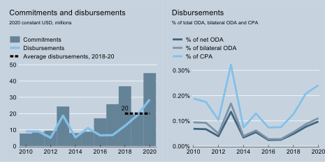

Strategies, Actors and Funding
In 2020, the Federal Ministry for Economic Cooperation and Development (BMZ) drew up a comprehensive package of reforms entitled “BMZ 2030”. The aim was to focus development measures and funding even more strategically, effectively and efficiently, inter alia, by concentrating the number of areas of work. New focus was put on areas such as the ones reflected in Germany’s support in the area of data and statistics, which often focusses on environmental data and statistics, agricultural data, data on migration, and, increasingly, new data sources associated with digital technologies. According to OECD data and research1, Germany disbursed nearly USD 29 million in 2020 (in 2020 prices) in support of data and statistics, significantly increasing since 2017. On average, USD 20 million were disbursed between 2018 and 2020 (Figure 1).
Figure 1: Germany - ODA to data and statistics, 2010 - 2020
Note: ODA: official development assistance; CPA: country programmable aid.
Germany’s support addresses concerns in relation to data and statistics in its partner countries from different angles:
Environmental data: More than a quarter of Germany’s ODA for data and statistics is directed towards addressing environmental degradation and climate change. For instance, Germany’s Ministry for Environment partnered with the Food and Agriculture Organization (FAO) of the United Nations, providing funding for the Global Forest Survey and establishing a global network of systematic sampling points to better understand and monitor forest ecosystems. Through the implementing agency Deutsche Gesellschaft für Internationale Zusammenarbeit (GIZ), the Federal Ministry for Economic Affairs and Climate Action further provided support for national climate change adaptation plans in French-speaking sub-Saharan Africa, aiming at supporting, on a science-based and capacity building approach, national adaptation plan processes in the three partner countries: Benin, Senegal and Burkina Faso. The scientific analyses produced within the context of this project are available here. The Federal Ministry of Food and Agriculture further supports the Global Information System on Plant Genetic Resources for Food and Agriculture (PGRFA). Furthermore, the Federal Ministry for Economic Cooperation and Development supports monitoring systems and training in the context of the international mechanism for reducing emissions from deforestation and forest degradation (REDD+) (e.g. as a partner of the Forest Carbon Partnership Facility, FCPF). Through its support for the World Bank’s Global Program on Sustainability and the EnhaNCA project of UNSD, BMZ contributes to the uptake and political use of the System of Environmental-Economic Accounting (SEEA), the UN statistical standard for Natural Capital Accounting that integrates economic and environmental data. BMZ, through GIZ, also provides support to a number of partner countries in collecting data on land use, pasture lands and forest resources to enable better management of natural resources and biodiversity, e.g. in Brazil, Indonesia, Central America, Peru, Togo and the Caucasus Region.
Population statistics: BMZ supports the Programme for the Modernisation of Civil Registration in Cameroon through the GIZ, aiming at official statisticians’ capacity building and awareness raising around self-registration in disadvantaged communities. It also funds the Support to the identification of poor households programme (IDPoor) in Cambodia through the GIZ, aiming at helping the Cambodian Government to standardize its procedure for identifying poor households across the nation. It also partnered with the United Nations population fund (UNFPA) to support the fifth General Population and Housing Census in Mali and Togo.
Agricultural data and statistics: BMZ supports the50X2030 Initiative, a multi-partner programme that aims to increase the capacity of 50 low- and lower middle-income countries to produce, analyse and apply data to decisions in the agricultural sectors that support rural development and food security. The initiative is implemented through a partnership between the strongest global actors in agriculture development, such as the World Bank, the FAO, and the International Fund for Agricultural Development.
Economic data and statistics: Global financial stability is in the purview of Germany’s Federal Ministry of Finance. In 2019, with a view to strengthening macroeconomic data and statistics, BMF partnered with the International Monetary Fund’s (IMF), contributing USD 4 million to its Data for Decisions (D4D) Thematic Fund.
SDG monitoring data: Aligning national development plans and data for monitoring national priorities with the 2030 Agenda and the Sustainable Development Goals (SDGs) and having comparable indicators is a key concern for Germany. GIZ’s Partners for Review initiative, a network of government representatives and stakeholders from civil society, the private sector, academia and other non-state actors, aimed to facilitate dialogue and peer learning between stakeholders involved in the national SDG review and monitoring process. Between 2016 and 2022, it has produced several case studies, often with a focus on overcoming critical data gaps. In the context of the 2030 Implementation Initiative, German development cooperation has provided support in monitoring, data analyses and evidence-based policymaking to more than 20 countries worldwide, including Bolivia, Cambodia, Georgia, Ghana, India, Kenya, Mexico, Namibia and Togo. As the second largest public donor for Official Development Assistance (ODA) worldwide, Germany contributes significantly to the achievement of the SDGs in partner countries. Effectively communicating these contributions and aligning impact measurement to the SDGs is also a priority for German Development Cooperation. With this purpose, a SDG-mapping methodology was developed and introduced in 2022. The SDG-Mapping process is largely automatised and enables a high degree of standardisation. The method is applied uniformly by all implementing organisations of German Development Cooperation. By means of the SDG mapping, the intended contribution of all German development cooperation measures to the achievement of the SDGs can be documented and transmitted to the OECD following the Creditor Reporting System (CRS) and policy markers.
Core statistical capacity: Germany’s Federal Statistical Office (Destatis) has been engaged in technical co-operation with sister organisations, especially with national statistical offices of the People’s Republic of China and partners in Central Asia. These projects are often commissioned by supranational or international organisations such as the European Union and the World Bank, although Germany’s Federal Ministry of the Interior has also funded bilateral co-operation in official statistics with Chinese authorities.
Digital data: In the context of data for development, BMZ aims to strategically increase access to digital data and strengthen the capacity of partners to use these resources for the design of better policies for better lives. For instance, the political initiative “Data4Policy” intends to promote evidence-based and value-driven policymaking through the use of both quantitative and qualitative data. Based on explorative approaches and by means of use cases 1) concrete technical solutions e.g. for the integration of non-traditional data are being tested and scaled, 2) the data infrastructure of partner governments is being improved, and 3) solutions for building robust data ecosystems are being institutionalized. The umbrella product of the Data4Policy initiative is a playbook developed together with UNDP and the Open Data Institute that will support partner countries in data-oriented policymaking. Data4Policy plans to align with the “BMZ Data Lab” in order to integrate practical perspectives and experience. In addition, the initiative supports the uptake of learnings from the use case “Women in Unpaid Care Work in Mexico” and from the “Gender Data Labs” into the political dialogue on BMZ’s feminist development strategy. BMZ also funds the German BACKUP Initiative Education in Africa, a programme aiming at mitigating the effects of the Covid-19 pandemic in the quality and continuity of educational services through the provision of digital solutions (e.g. high-quality digital learning courses), in countries such as Democratic Republic of the Congo, Malawi, Zambia, Botswana, Burundi, Madagascar, Namibia and Rwanda. The Federal Ministry of Education and Research supports research and teaching institutions on sectoral programmes, e.g. remote sensing data in water-associated disaster risk management and water ecosystems protection, and climate research data.
The analysis in this profile is based on official data reported by members to the OECD’s Creditor Reporting System. It is published under the responsibility of the OECD. OECD analysts mined the database using a text search with manual curation. Where relevant, members contributed additional data to fill gaps. Please see the methodological annex for further details on the data analysis.↩︎